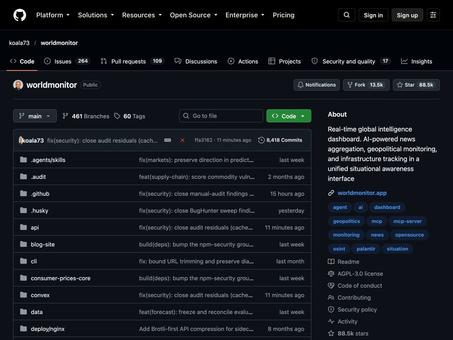
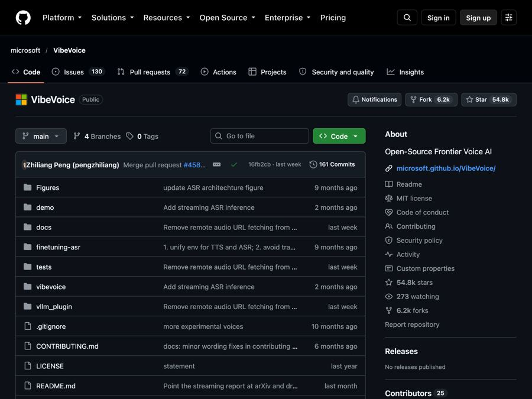

AI for Media
Free tools and news that matter if you work in Media.

OpenReel: Free Online Video Editor, No Watermark (2026)
OpenReel is a free online video editor with no watermark. Cut clips, add captions, mix music and export up to 4K, right in your web browser.

AI News August 2026: Governments Start Testing AI
AI news August 2026: the EU and White House gain ways to test AI, Gemini hits 1 billion users, Nvidia backs $105B for OpenAI, and ChatGPT ads pass $1B.

OpenCut: Free CapCut Alternative, Open Source (2026 Guide)
OpenCut is a free CapCut alternative you can use in your browser today. It's open source, and a full rewrite for desktop, mobile and AI agents is on the way.

AI News May 2026: Anthropic Passes OpenAI, Musk Loses
AI news May 2026: Anthropic rents Musk's data center and passes OpenAI in value, Musk loses his OpenAI suit, Google remakes search, and AI solves a math puzzle.

CorridorKey: Free AI Green Screen Removal That Keeps Hair
CorridorKey is free AI green screen removal. It pulls people off green or blue screens and keeps fine hair, motion blur and see-through edges clean.

World Monitor: A Free Live World News Map With AI Briefs
World Monitor is a free live world news map. It puts global news, markets and events on one interactive globe, with short AI-written news briefs.

AI News January 2026: Siri, ChatGPT Ads and Health
AI news January 2026: Apple picks Gemini for Siri, Amazon cuts 16,000 jobs, two countries block Grok, ChatGPT gets a Health space and ads.

VibeVoice: Free AI Transcription Tool From Microsoft
VibeVoice is a free AI transcription tool from Microsoft. It turns up to 60 minutes of audio into text and labels who spoke and when.